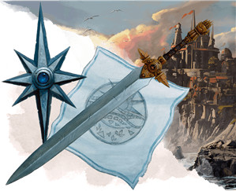

Le paladin D&D 5 pour les nuls
Vous êtes un paladin, un guerrier qui lutte contre le mal au nom d'un serment sacré que vous avez juré de défendre. Les paladins les plus emblématiques sont au service de la justice et se consacrent à la protection des plus faibles, mais certains paladins s'engagent à combattre les ennemis de leur dieu quels qu'ils soient ou à protéger l'ordre naturel du monde. Votre serment vous accorde des pouvoirs qui vous permettent de vous battre avec une lame tout en utilisant des sorts sacrés. Et si les guerriers et les barbares peuvent vous surclasser en termes de prouesses au combat, vos capacités à soigner, frapper et manipuler le champ de bataille grâce à la magie font de vous un combattant épique et versatile.
Cette aide de jeu vous guidera à travers les décisions que vous avez à prendre durant les cinq premiers niveaux de paladin et vous suggérera les meilleurs choix selon le type de paladin que vous voulez jouer. Lorsque vous jouerez votre rôle de guerrier saint, vous constaterez que chaque paladin a une personnalité et un sens de l'honneur différents. De même, chaque paladin se bat d'une manière unique suivant les sorts, armes et capacités qu'il obtient de son serment sacré. Nous vous présenterons donc certaines options emblématiques qui font que le paladin se démarque des autres classes de D&D, mais aussi où faire des choix qui rendront votre paladin unique.
Créer votre paladin
Sans aller jusqu'à parler d'optimisation, la première étape pour bien jouer votre classe est de construire votre personnage efficacement.
- Choisissez votre race. N'importe laquelle peut faire un bon paladin, mais la plupart des paladins ont tendance à provenir de races naturellement fortes ou charismatiques. La Force et le Charisme sont vos caractéristiques les plus utiles, car la première vous permet d'infliger plus de dégâts lors de vos attaques et le Charisme améliore la puissance de vos capacités divines. Cela aide aussi à vivre le fantasme du chevalier en armure brillante qui a les dames à ses pieds, ou celui du guerrier saint prosélyte qui attire les gens ordinaires à sa cause divine. Les drakéides sont des paladins idéaux car ils ont un bonus à la fois en Force et en Charisme, et leur lien avec les dieux des dragons Bahamut et Tiamat donne sur une histoire du Bien contre le Mal que tout paladin peut explorer. Les humains font aussi des paladins emblématiques, comme les douze légendaires chevaliers de Charlemagne qui furent les premiers paladins de l'histoire. Leurs caractéristiques arrondies et leur accès rapide à un don (si vous utilisez la variante) sont utiles à tout paladin. Toute race avec un bonus en Force ou en Constitution, comme les nains ou les demi-orcs, font de bons combattants. De tels paladins pourraient souffrir d'un manque de Charisme, mais leur puissance physique le compensera largement.
- Choisissez la classe de paladin (évidemment !).
- Choisissez des compétences qui correspondent à ce que vous voulez que soit votre personnage.
Quel type de paladin ?
Lorsque vous créez votre paladin, vous devriez réfléchir à votre contribution au sein du groupe. Si vous voulez frapper le mal et vous concentrer davantage sur les dégâts, faites un paladin focalisé sur l'offensive. Si vous préférez infliger moins de dégâts mais avoir plus de résistance, envisagez plutôt un rôle défensif. Si par contre votre mission est de protéger vos alliés, votre meilleur choix est de choisir des capacités de protection. Même si vous ne choisissez votre serment sacré (aussi appelée sous-classe) qu'à partir du niveau 3, vos styles de combat, le choix de vos armes et votre sélection de sorts vous permettront de vous positionner dans le groupe dès les premiers niveaux. Une fois que vous aurez choisi une sous-classe, votre rôle sera encore mieux défini. Cela dit, vous pouvez utiliser les deux premiers niveaux pour décider de la voie à suivre pour le reste de la campagne.
Offensif
Les paladins qui se concentrent sur le jugement divin devraient utiliser des armes à deux mains comme les épées à deux mains, choisir le style de combat Arme à deux mains au niveau 2 et suivre le serment de Vengeance ou le serment de Conquête (Xanathar’s Guide to Everything) au niveau 3. Ce dernier est plus adapté pour les paladins d'alignement loyal-bon ou loyal-neutre car ce serment leur ordonne de faire la guerre et d’éradiquer leurs ennemis.
Défensif
Les paladins qui cherchent à se protéger sur le champ de bataille ont intérêt à utiliser une arme de corps à corps à une main et un bouclier, à choisir le style de combat Défense au niveau 2 et à suivre le serment de Dévotion ou le serment des Anciens au niveau 3. Le premier permet de jouer facilement un chevalier emblématique en armure brillante, tandis que le dernier vous permet de jouer facilement un chevalier vert ou un combattant des fées.
Protecteur
Les paladins qui attachent de l'importance à la sécurité des autres utilisent des tactiques défensives mais s’assurent aussi que les monstres les attaquent au lieu de viser des cibles moins résistantes. Si vous voulez être un protecteur pour vos alliés, vous devriez choisir une arme de corps à corps à une main et un bouclier, choisir le style de combat Protection au niveau 2 et suivre le serment de Rédemption (Xanathar’s Guide to Everything) au niveau 3. Ce serment est parfait pour jouer un défenseur idéaliste qui préfère briser le cœur d'un ennemi avec des mots plutôt que de le percer avec une lame.
Créer votre paladin - la suite
- Placez votre valeur de caractéristique la plus élevée en Force et votre deuxième plus élevée en Charisme. Généralement, les paladins doivent être d'abord forts en bras et forts pour lancer des sorts ensuite, mais si vous voulez vous concentrer sur le lancer de sorts plutôt que sur les épées, vous pouvez inverser cet ordre.
- Choisissez un historique qui colle avec le concept de votre personnage. C'est une opportunité pour être créatif ! Comment êtes-vous devenu paladin ? Étiez-vous un acolyte formé dès sa naissance dans le cadre d'un ordre religieux ? Un ermite à qui un dieu a murmuré un secret lors de sa méditation ? Un héros du peuple qui poursuit sa vengeance pour un meurtre commis dans le village que vous protégiez ?
- Pour votre équipement, choisissez :
- Pour le choix entre une arme de guerre et un bouclier ou deux armes de guerre, un paladin défensif ou un protecteur devrait choisir l'arme et le bouclier, tandis qu'un paladin offensif devrait choisir les deux armes de guerre, de préférence une arme à deux mains et une arme à distance comme une arbalète. Un paladin qui veut plus de flexibilité pourrait choisir un bouclier et une épée longue, car le caractère polyvalent de l'épée longue permet de l'utiliser à une ou deux mains, selon la situation.
- Pour le choix entre cinq javelines et une arme courante, les javelines sont presque toujours le meilleur choix, sauf si vous voulez une arme courante spécifique pour coller au concept de votre personnage.
- Les paladins qui se focalisent sur leur nature religieuse ou qui passent beaucoup de temps dans les villes peuvent vouloir un sac d'ecclésiastique, tandis que les paladins avec une mission de guerrier ou de voyageur préfèreront le sac d'explorateur.
- La forme de votre symbole sacré est l'occasion de prendre une décision pour le personnage ! Comment portez-vous le symbole de votre dieu et à quoi ressemble-t-il ? Souvenez-vous de la dernière scène d'Indiana Jones et la dernière croisade : choisissez-vous le symbole en bois simple ou celui en or ?
Se battre comme un paladin
Alors que les combattants revêtent une armure brillante et s'arment d'une puissante lame, les paladins sont avant tout des combattants de première ligne qui peuvent également utiliser leurs pouvoirs pour tromper les ennemis et soigner les alliés en cas de besoin. Comme les clercs, les paladins connaissent tous les sorts de leur liste de sorts, mais ils ne peuvent en préparer qu'un certain nombre par jour. Certes, vous pouvez changer vos sorts préparés chaque fois que vous terminez un repos long, mais il est toujours utile d'avoir une liste de base sur laquelle vous pouvez compter lorsque vous ne voulez pas perdre de temps et d'énergie à adapter manuellement une liste de sorts aux défis inconnus de la journée.
Vous ne pouvez préparer qu'un nombre de sorts égal à votre modificateur de Charisme plus la moitié de votre niveau dans cette classe. La sélection de sorts qui suit suppose que vous avez un modificateur de Charisme de +2 au niveau 1. S'il est de +3, vous pouvez préparer un sort supplémentaire de votre choix (ou plus, si votre modificateur est encore plus élevé).
Enfin, n'oubliez pas les sorts de serment qui vous ont été accordés par votre sous-classe à partir du niveau 3. Ces sorts sont toujours préparés et peuvent aider à compléter votre arsenal. Si la liste suggère de préparer un sort que vous avez déjà en tant que sort de serment, choisissez simplement un autre sort à préparer.
Tous
Au niveau 1, vous obtenez les capacités Sens divin et Imposition des mains. La première vous permet de détecter le bien et le mal, ce qui peut vous aider à vous préparer efficacement au combat, et à connaitre la véritable nature de certaines créatures, comme un vampire qui se fait passer pour un humain normal. Imposition des mains est une capacité puissante qui vous permet de soigner vos alliés blessés par un simple contact. Il est intéressant de toujours garder sous le coude quelques points de guérison au cas où le principal guérisseur de votre groupe tomberait inconscient en plein combat.
Au niveau 2, vous pouvez choisir un Style de combat et avoir la possibilité de lancer des sorts. Plus de détails sur ce sujet sont donnés ci-dessous selon votre rôle dans le groupe. Vous avez également la possibilité d'utiliser Châtiment divin pour faire s'abattre sur vos ennemis la colère de votre dieu, infligeant des dégâts majeurs lorsque vous attaquez avec une arme de corps à corps, en particulier contre les fiélons et les morts-vivants.
Au niveau 3, vous choisissez votre Serment sacré. Plus de détails sur ce sujet sont donnés ci-dessous selon votre rôle dans le groupe. Vous gagnez également Santé divine, qui vous immunise contre les maladies.
Au niveau 4, vous obtenez Amélioration de caractéristiques ou un don. La plupart des paladins augmentent leur Force ou leur Charisme le plus rapidement possible pour être de meilleurs combattants ou lanceurs de sorts, mais certains souhaitent choisir un don en fonction de leur rôle dans le groupe.
Au niveau 5, vous gagnez Attaque supplémentaire, ce qui vous permet d'attaquer deux fois lorsque vous prenez l'action Attaquer, au lieu d'une fois. Cela marque une augmentation massive de vos dégâts potentiels, en particulier en combinaison avec Châtiment divin.
Offensif
Les sorts des paladins visent principalement à infliger des dégâts considérables ou à atténuer les dégâts. Étant donné que vous avez peu d'emplacements de sorts (vous ne pouvez préparer que quelques sorts), il est généralement préférable de vous focaliser sur votre rôle offensif plutôt que de vous disperser. Cependant, au final c'est votre de votre sélection de sorts et vous devriez choisir des sorts qui vous aideront en fonction de votre propre campagne.
Au niveau 2, choisissez le style de combat Arme à deux mains. Cela vous permet de relancer les dés faibles des dégâts de votre arme, facilitant ainsi les dégâts massifs avec une arme tenue à deux mains.
Au niveau 2 encore, vous pouvez préparer un nombre de sorts de niveau 1 égal à votre bonus de Charisme plus la moitié de votre niveau de paladin, arrondi à l'inférieur (minimum un sort). Si votre bonus de Charisme est de +2, cela signifie que vous pouvez préparer trois sorts différents au niveau 2. Trois sorts offensants comme faveur divine, châtiment calcinant et châtiment tonitruant. Si vous pouvez préparer plus de trois sorts à ce niveau, envisagez de compléter votre arsenal avec des sorts utilitaires de votre choix.
Au niveau 3, vous vous engagez à suivre votre Serment sacré en choisissant entre le serment de Vengeance et le serment de Conquête. Ces serments vous accordent tous deux des sorts de serment et deux options de Conduit divin au niveau 3. N'oubliez pas que vous ne pouvez utiliser l'option Conduit divin qu’une seule fois par repos court.
Si vous suivez le serment de Vengeance, vous pouvez utiliser votre Conduit divin pour utiliser Conspuer l'ennemi, ce qui vous permet d'effrayer une créature de votre choix si elle échoue à un jet de sauvegarde. Effrayée de cette manière, elle est immobilisée par la peur ; une excellente option pour empêcher un ennemi de fuir ! Vous pouvez également l'utiliser pour déclarer un Voeu d'inimitié, ce qui vous donne un avantage aux jets d'attaque contre une créature pendant 1 minute. Cette dernière option est généralement plus forte, mais les deux options sont intéressantes.
Si vous suivez le serment de Conquête, vous pouvez utiliser votre Conduit divin pour utiliser Présence conquérante, ce qui vous permet de forcer les créatures de votre choix qui peuvent vous voir dans un rayon de 9 mètres à faire un jet de sauvegarde pour ne pas être effrayées. Si cela semble être une amélioration directe de la capacité Conspuer l'ennemi du serment de Vengeance, notez que ces créatures peuvent répéter le jet de sauvegarde à la fin de leurs tours et ne sont pas immobilisées lorsqu'elles sont effrayées. Vous pouvez également l'utiliser pour faire une Frappe guidée, ce qui vous donne un bonus de +10 au toucher lors de votre prochain jet d'attaque. C'est génial si vous avez besoin de décrocher un Châtiment divin pour terminer un ennemi qui fuit.
Au niveau 4, vous gagnez Amélioration de caractéristiques ou un don, comme Maître des armes à deux mains. Ce don vous permet de faire des dégâts considérables au détriment de la précision, mais le compromis en vaut généralement la peine.
Au niveau 4 encore, vous pouvez préparer un sort supplémentaire par jour. Si vous avez augmenté votre valeur de Charisme avec une Amélioration de caractéristiques à ce niveau, vous pouvez préparer deux sorts supplémentaires ! Il peut être utile de compléter votre sélection de sorts en choisissant un sort utilitaire ou un sort de guérison comme soins, au cas où les choses tourneraient mal dans un combat.
Au niveau 5, vous obtenez la capacité de lancer des sorts de niveau 2. Vous pouvez alors arrêter de préparer certains sorts de niveau 1 moins utiles (en fonction de la campagne à ce stade) et sélectionner un ou deux sorts puissants de niveau 2 comme appel de destrier ou arme magique.
Défensif
En tant que paladin défensif, vos traits et sorts doivent vous garder en vie à tout prix, même si cela implique de sacrifier un peu de votre potentiel de dégâts.
Au niveau 2, choisissez le style de combat Défense. Cela vous donne un bonus de +1 à la CA si vous portez une armure, ce qui équivaut à un objet magique rare !
Au niveau 2 encore, vous pouvez préparer un nombre de sorts de niveau 1 égal à votre bonus de Charisme plus la moitié de votre niveau de paladin, arrondi à l'inférieur (minimum un sort). Si votre bonus de Charisme est de +2, cela signifie que vous pouvez préparer trois sorts différents au niveau 2. Trois sorts défensifs comme bénédiction, soins et bouclier de la foi. Protection contre le mal et le bien est également un bon choix, mais plus situationnel que les autres. Si vous pouvez préparer plus de trois sorts à ce niveau, envisagez de compléter votre arsenal avec des sorts utilitaires de votre choix.
Au niveau 3, vous vous engagez à suivre votre Serment sacré en choisissant entre le serment de Dévotion et le serment des Anciens. Ces serments vous accordent tous deux des sorts de serment et deux options de Conduit divin au niveau 3. N'oubliez pas que vous ne pouvez utiliser l'option Conduit divin qu’une seule fois par repos court.
Si vous suivez le serment de Dévotion, vous pouvez utiliser votre Conduit divin pour faire de votre lame une Arme sacrée qui améliore les dégâts, inflige des dégâts magiques et brille autour de vous. Vous pouvez également utiliser Renvoi des impies, qui force tous les morts-vivants et les démons dans un rayon de 9 mètres à effectuer un jet de sauvegarde ou à fuir votre sainte présence. Cela peut vous permettre, à vous et à vos alliés, de vous soigner ou de récupérer vos forces dans un combat particulièrement difficile... ou de vous enfuir !
Si vous suivez le serment des Anciens, vous pouvez utiliser votre Conduit divin pour faire appel à la Colère de la nature, qui fait surgir des vignes de la terre pour retenir une créature de votre choix. Vous pouvez également l'utiliser Renvoi des infidèles, ce qui vous permet de repousser fées et fiélons, à la différence de l'option Renvoi des impies du serment de Dévotion.
Au niveau 4, vous gagnez Amélioration de caractéristiques ou un don, comme Spécialiste des armures lourdes. Ce don réduit les dégâts non magiques que vous subissez, vous permettant de survivre plus longtemps sur le champ de bataille, en particulier contre les hordes de faibles créatures.
Au niveau 4 encore, vous pouvez préparer un sort supplémentaire par jour. Si vous avez augmenté votre valeur de Charisme avec une Amélioration de caractéristiques à ce niveau, vous pouvez préparer deux sorts supplémentaires ! Il peut être utile de compléter votre sélection de sorts en choisissant un sort offensif pour augmenter vos dégâts potentiels, au cas où. Parmi les bons sorts offensifs, citons châtiment calcinant et châtiment tonitruant.
Au niveau 5, vous obtenez la capacité de lancer des sorts de niveau 2. Vous pouvez alors arrêter de préparer certains sorts de niveau 1 moins utiles (en fonction de la campagne à ce stade) et sélectionner un ou deux sorts puissants de niveau 2 comme trouver appel de destrier ou restauration partielle.
Protecteur
Les options des paladins protecteurs atténuent les dégâts qu'ils subissent et les maintiennent en vie tout en empêchant leurs alliés de subir des dégâts. Cela se fait généralement au détriment de pouvoirs offensifs, mais vous devriez souhaiter conserver une présence menaçante sur le champ de bataille afin que les créatures se sentent obligées de vous attaquer au lieu de vos alliés.
Au niveau 2, choisissez le style de combat Protection. Cela vous permet d'imposer un désavantage à toute attaque contre un allié dans un rayon de 1,50 mètre par une réaction si vous utilisez un bouclier.
Au niveau 2 encore, vous pouvez préparer un nombre de sorts de niveau 1 égal à votre bonus de Charisme plus la moitié de votre niveau de paladin, arrondi à l'inférieur (minimum un sort). Si votre bonus de Charisme est de +2, cela signifie que vous pouvez préparer trois sorts différents au niveau 2. Trois bons sorts protecteurs comme bénédiction, duel forcé et héroïsme. Soins est toujours une bonne option, mais on peut espérer que vous aurez un guérisseur dédié qui vous aidera à rester en vie. Si vous pouvez préparer plus de trois sorts à ce niveau, envisagez de compléter votre arsenal avec des sorts utilitaires de votre choix.
Au niveau 3, vous vous engagez à suivre votre Serment sacré en choisissant le serment de Rédemption. Ce serment vous accorde des sorts de serment et deux options de Conduit divin au niveau 3. N'oubliez pas que vous ne pouvez utiliser l'option Conduit divin qu’une seule fois par repos court. Vous pouvez utiliser votre Conduit divin avec Émissaire de paix, ce qui vous accorde un bonus de +5 aux jets de Charisme (Persuasion) pendant 10 minutes. Vous pouvez également utiliser Blâme du violent qui inflige des dégâts radiants à un ennemi qui a blessé l'un de vos alliés.
Au niveau 4, vous gagnez Amélioration de caractéristiques ou un don, comme Mage de guerre. Ce don vous permet de maintenir plus facilement la concentration sur vos puissants sorts de soutien tout en prenant des dégâts.
Au niveau 4 encore, vous pouvez préparer un sort supplémentaire par jour. Si vous avez augmenté votre valeur de Charisme avec une Amélioration de caractéristiques à ce niveau, vous pouvez préparer deux sorts supplémentaires ! Il peut être utile de compléter votre sélection de sorts en choisissant un sort offensif pour devenir une menace plus crédible. Parmi les bons sorts offensifs, citons châtiment calcinant et châtiment tonitruant.
Au niveau 5, vous obtenez la capacité de lancer des sorts de niveau 2. Vous pouvez alors arrêter de préparer certains sorts de niveau 1 moins utiles (en fonction de la campagne à ce stade) et sélectionner un ou deux sorts puissants de niveau 2 comme trouver appel de destrier ou aide.
Personnaliser son paladin
Les paladins sont une classe liée à un code d'honneur (ou de déshonneur) et portent le poids de décennies de dilemmes moraux. Selon la campagne à laquelle vous jouez, vous devriez parler en privé avec votre MD pour déterminer si vous voulez que votre paladin ait une morale stricte en noir et blanc ou une vision du monde plus nuancée. Cette discussion vous aidera à cerner le ton de la campagne et à exister de manière plus authentique dans le monde afin de vous amuser tout en jouant votre rôle.
Les paladins mélangent parfaitement le jeu de rôle et les combats, et sont confrontés à des choix intéressants. Leur polyvalence au combat n’est concurrencée que par la diversité des codes éthiques présentés par leurs serments sacrés. Vous pourrez toujours trouver quelque chose d'unique lors de la création d'un personnage paladin. Sans parler du paladin Oathbreaker, une option pour les personnages maléfiques présentée dans le Dungeon Master's Guide, si votre MD l'accepte. Et si vous trahissez votre serment au milieu d'une campagne, cela peut complètement changer le destin de votre personnage ! Finalement, peu importe les choix que vous faites en tant que paladin, assurez-vous qu'ils soient clairs et audacieux. Les paladins sont beaucoup de choses, mais la subtilité n'est pas leur fort.
À rendre la justice au nom de votre dieu maintenant !
Basé sur un article de James Haeck, traduit par blueace